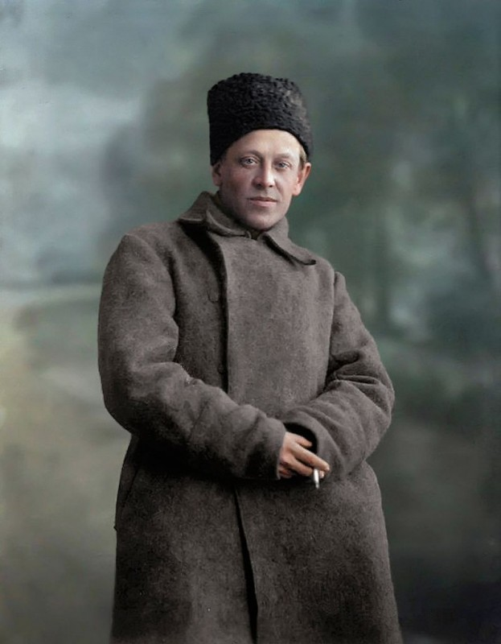
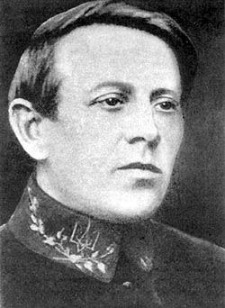

1920 рік,Петлюра в Києві

Петлюра думає про Порошенка та намагається не заплакати

1920 рік,Питписання україно-польскої коаації проти радянського союза

Симон Петлюра під час перебування Директорії у Камʼянці-Подільському у 1919 році.